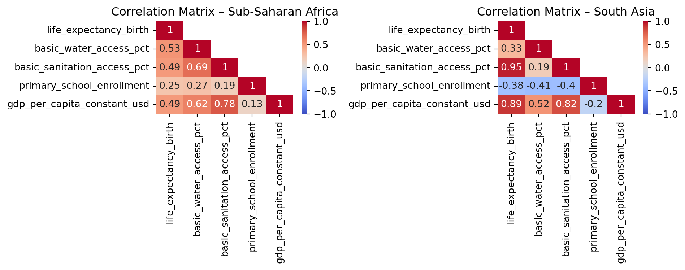

QTM 350 Final Project Analysis
Public Health Infrastructure, Human Capital, and Diverging Life Expectancy Trends in Sub-Saharan Africa and South Asia, 2000–2020
Anita Osuri (2557540)
Laura Wang (2550326)
Winnie Lau (2554252)
Caitlyn Ye (2555901)
Tashifa Noor (2588861)
This is a Quarto document inside the DATASCI350-group3 repo.
Introduction
Over the last twenty years, Sub-Saharan Africa and South Asia have experienced substantial changes in sanitation, life expectancy, and economic conditions. The pace and consistency of these changes differ between the two regions. Our core question is: As Sub-Saharan Africa and South Asia underwent major development from 2000 to 2020, to what extent did improvements in public health infrastructure (water and sanitation) and human capital (primary education) correspond to their divergent paths in life expectancy?
Sub-Saharan Africa lags in access to basic drinking water and sanitation, and multiple studies link this gap to slower progress in life expectancy. Access to basic sanitation substantially reduces early-life mortality risks (Gaffan et al. 2023). Improved drinking water lowers exposure to diarrheal disease, one of the major contributors to preventable child mortality (Wolf et al. 2018). Inadequate water, sanitation, and hygiene account for more than 800,000 global deaths per year (Prüss-Ustün et al. 2019), underscoring the importance of WASH infrastructure in shaping survival. Expanding basic sanitation also yields large health and economic returns, especially in lower-income regions (Hutton and Chase 2017).
Primary school enrollment is associated with reduced child mortality due to greater health literacy and care-seeking behaviors (Amegbor and Addae 2023). Education is one of the strongest social determinants of early-life survival (Cutler and Lleras-Muney 2010). Rising GDP per capita supports these improvements by increasing government capacity to invest in essential infrastructure, health systems, and education (Raina and Dar 2025) (Bloom, Canning, and Fink 2014). Improvements in early-life survival may also contribute to longer-term gains in life expectancy.
Compared with Sub-Saharan Africa, South Asia has seen faster increases in water and sanitation access, more rapid economic growth, and rising primary enrollment. These shifts align with steeper improvements in life expectancy (UNICEF and WHO 2021) (Bank 2023). We hypothesize that higher levels of basic drinking water access, basic sanitation coverage, primary school enrollment, and GDP per capita will be positively correlated with life expectancy, and that this association will be more pronounced in South Asia than in Sub-Saharan Africa.
Data Description
Data Analysis
Variable Correlations: Heatmap
Methodology
To begin exploring the relationship between these variables, correlation matrices for the 5 variables of interest (life expectancy at birth, basic water access, basic sanitation access, primary school enrollment, and GDP per capita) in Sub-Saharan Africa and South Asia were calculated and visualized. Since the dataset includes longitudinal data, these variables were averaged at the country level to obtain a single representative value per country. The dataset was then subsetted by region to create two correlation matrices for region-level analysis. The Sub-Saharan Africa region contained 48 countries while South Asia contained 6 countries. Finally, heatmaps were created from the matrices to visualize the Pearson correlation coefficients and show how strongly each variable is associated with each other.
Results
As seen in Figure 1, in Sub-Saharan Africa, all five development indicators show positive correlations with one another. The correlations between life expectancy at birth and each of the 4 other variables range from weak to intermediate correlation strength. The correlation between life expectancy and primary school enrollment is lowest at 0.25, while the correlation with basic water access is highest at 0.53. In South Asia, there is greater variability in correlation between the variables, compared to Sub-Saharan Africa. Life expectancy is positively correlated with basic water access (0.33), basic sanitation access (0.95), and GDP per capita (0.89). Such strong correlation is not seen in Sub-Saharan Africa countries. However, primary school enrollment is negatively correlated with all 4 of the other variables, including a correlation of -0.38 with life expectancy.
Discussion
The correlation patterns differ substantially between Sub-Saharan Africa and South Asia. Sub-Saharan Africa shows moderate and consistently positive associations among all variables, suggesting a relatively uniform pattern in how public health infrastructure, education, economic conditions, and life expectancy relate to one another in this region. In contrast, the South Asian correlations display greater variability, with a mix of strong and weak positive correlations as well as negative ones.
These differences can be interpreted in the context of broader regional characteristics that shape how these indicators tend to co-occur. In Sub-Saharan Africa, where baseline access to clean water and sanitation is relatively low, countries with higher levels of these services also tend to have higher life expectancy, resulting in moderate positive correlations (Armah et al. 2018). In South Asia, basic water access is generally higher and less variable, so it may not align as closely with differences in life expectancy. Instead, sanitation access shows a stronger association, consistent with the region’s historically severe sanitation-related disease burden (UNICEF 2022). These contextual differences may help explain why the pattern of associations differs across the two regions.
It is important to note that some of the more extreme or unexpected correlations, particularly in South Asia, may be influenced by the small number of countries in that regional sample. With only 6 observations, individual countries can exert a large influence on the correlation coefficients. In contrast, the Sub-Saharan Africa region includes 48 countries, offering a more stable basis for identifying general patterns. This difference in sample size may account for findings such as the negative correlation between primary school enrollment and life expectancy in South Asia, which is not observed in Sub-Saharan Africa. Overall, there appears to be correlation between these 5 variables, allowing for deeper analysis into how these indicators interact with one another.
Linear Regression
Methodology
To help answer our question we ran three types of linear regression models to see how our predictor variables basic_water_access_pct, basic_sanitation_access_pct, primary_school_enrollment, and gdp_per_capita_constant_usd affected life_expectancy_birth.
The first type of model is a regular OLS model that does not highlight differences in region, rather treats both regions as one overall area that underwent many developments. Although this was helpful in seeing how our predictors generally affect the life_expectancy_birth, we knew we wanted a model that separated by region to take into account differences that may arise in the two regions.
The second type of linear regression model we created was a parallel lines model, where each region would have its own line, with the same slope but a different intercept. We created a binary variable called Binary_subsaharan_africa where 1 indicates the country is in Sub-Saharan Africa and 0 (the baseline) indicates the country is in South Asia.
The third type of linear regression model we created was an interaction model. This takes into account the differences between regions, not only in the intercept, but also the slope. This is the most flexible model which we initially thought was the best because it’s unlikely the two regions have the same slope. However, after running the regression, we decided not to use this for our analysis due to the insignificant p-values produced.
Results
OLS Regression Results
=================================================================================
Dep. Variable: life_expectancy_birth R-squared: 0.469
Model: OLS Adj. R-squared: 0.466
Method: Least Squares F-statistic: 195.1
Date: Thu, 04 Dec 2025 Prob (F-statistic): 6.38e-120
Time: 23:30:39 Log-Likelihood: -2786.4
No. Observations: 890 AIC: 5583.
Df Residuals: 885 BIC: 5607.
Df Model: 4
Covariance Type: nonrobust
===============================================================================================
coef std err t P>|t| [0.025 0.975]
-----------------------------------------------------------------------------------------------
const 43.4413 1.059 41.014 0.000 41.362 45.520
basic_water_access_pct 0.1453 0.015 9.394 0.000 0.115 0.176
basic_sanitation_access_pct 0.1111 0.014 7.954 0.000 0.084 0.139
primary_school_enrollment 0.0300 0.009 3.456 0.001 0.013 0.047
gdp_per_capita_constant_usd -8.95e-06 9.8e-05 -0.091 0.927 -0.000 0.000
==============================================================================
Omnibus: 198.849 Durbin-Watson: 0.257
Prob(Omnibus): 0.000 Jarque-Bera (JB): 564.877
Skew: -1.116 Prob(JB): 2.18e-123
Kurtosis: 6.201 Cond. No. 2.02e+04
==============================================================================
Notes:
[1] Standard Errors assume that the covariance matrix of the errors is correctly specified.
[2] The condition number is large, 2.02e+04. This might indicate that there are
strong multicollinearity or other numerical problems.This gives us a linear model where: \[ {life\_expectancy\_birth}_i = \beta_0 + \beta_1\,\mathrm{basic\_water\_access\_pct}_i + \beta_2\,\mathrm{basic\_sanitation\_access\_pct}_i + \beta_3\,\mathrm{primary\_school\_enrollment}_i + \beta_4\,\mathrm{gdp\_per\_capita\_constant\_usd}_i + \varepsilon_i \]
More specifically, when we add the coefficients from our model we get: \[ {life\_expectancy\_birth}_i = 43.4413 + 0.1453\mathrm{basic\_water\_access\_pct}_i + 0.1111\mathrm{basic\_sanitation\_access\_pct}_i + 0.0300\mathrm{primary\_school\_enrollment}_i - 8.95\times 10^{-6}\mathrm{gdp\_per\_capita\_constant\_usd}_i \]
These coefficients mean: for a one-unit (one percentage-point) increase in basic_water_access_pct, life_expectancy_birth increases by 0.1453 years, holding other predictors constant. A one-percentage-point increase in basic_sanitation_access_pct is associated with a 0.1111-year increase, and a one-percentage-point increase in primary_school_enrollment is associated with a 0.0300-year increase. The gdp_per_capita_constant_usd coefficient (−8.95×10⁻⁶) means an additional $1 in GDP per capita is associated with a −8.95×10⁻⁶-year change in life expectancy. The intercept 43.4413 is the predicted life expectancy when all predictors equal zero.
The regression output showed an F-statistic of 195.1 with a p-value 6.38e-120 (less than our threshold of 0.05), meaning that at least one of our predictors has a significant relationship with life expectancy. Additionally, all the p-values of the coefficients, except for gdp_per_capita_constant_usd were less than 0.05, meaning that we cannot reject the null hypothesis that these variables have no effect on life expectancy. The R-squared value is low at 0.469 meaning that approximately 46.9% of the variance in life expectancy can be explained by the predictors in our model. However, we know there are numerous factors that can affect life expectancy. We wanted to specifically see how improvements in public health infrastructure affected it to answer our question, and also added GDP, as we knew that would be a very obvious confounding variable.
OLS Regression Results
=================================================================================
Dep. Variable: life_expectancy_birth R-squared: 0.515
Model: OLS Adj. R-squared: 0.513
Method: Least Squares F-statistic: 188.0
Date: Thu, 04 Dec 2025 Prob (F-statistic): 2.31e-136
Time: 23:30:39 Log-Likelihood: -2745.5
No. Observations: 890 AIC: 5503.
Df Residuals: 884 BIC: 5532.
Df Model: 5
Covariance Type: nonrobust
===============================================================================================
coef std err t P>|t| [0.025 0.975]
-----------------------------------------------------------------------------------------------
const 52.5842 1.416 37.139 0.000 49.805 55.363
basic_water_access_pct 0.0929 0.016 5.863 0.000 0.062 0.124
basic_sanitation_access_pct 0.0852 0.014 6.249 0.000 0.058 0.112
primary_school_enrollment 0.0301 0.008 3.631 0.000 0.014 0.046
gdp_per_capita_constant_usd 0.0003 9.79e-05 2.606 0.009 6.3e-05 0.000
Binary_subsaharan_africa -6.0865 0.659 -9.234 0.000 -7.380 -4.793
==============================================================================
Omnibus: 201.796 Durbin-Watson: 0.282
Prob(Omnibus): 0.000 Jarque-Bera (JB): 705.727
Skew: -1.059 Prob(JB): 5.67e-154
Kurtosis: 6.813 Cond. No. 2.98e+04
==============================================================================
Notes:
[1] Standard Errors assume that the covariance matrix of the errors is correctly specified.
[2] The condition number is large, 2.98e+04. This might indicate that there are
strong multicollinearity or other numerical problems.From this we get two equations predicting life_expectancy_birth - one for each region.
For South Asia: \[ {life\_expectancy\_birth}_i= 52.5842 +0.0929\mathrm{basic\_water\_access\_pct}_i +0.0852\mathrm{basic\_sanitation\_access\_pct}_i +0.0301\mathrm{primary\_school\_enrollment}_i +0.0003\mathrm{gdp\_per\_capita\_constant\_usd}_i \]
For Sub-Saharan Africa: \[ {life\_expectancy\_birth}_i= (52.5842-6.0865) +0.0929\mathrm{basic\_water\_access\_pct}_i +0.0852\mathrm{basic\_sanitation\_access\_pct}_i +0.0301\mathrm{primary\_school\_enrollment}_i +0.0003\mathrm{gdp\_per\_capita\_constant\_usd}_i \]
These equations show that holding the predictor variables constant between the two regions, Sub-Saharan Africa’s residents have a life expectancy 6.0865 years shorter than South Asia.
The F-statistic of the regression is 188.0 with a p-value of 2.31e-136. This p-value, since it is less than 0.05, tells us that at least one of the predictors we used has a significant relationship with life expectancy. For the individual coefficients, all p-values are significant which means we cannot reject the null hypothesis that these variables have no relationship on life expectancy. The R-squared is 0.515, which is still quite low, but as mentioned previously, we didn’t necessarily want to create a model with all potential predictors of life expectancy, as that isn’t our research question.


These plots show our predicted vs. actual for the three predictor variables of interest. We did not include GDP because it was a confounding variable we included in our regression, but not the main point of our research question. South Asia’s dots in Figure 2 show that there are much higher levels of water access compared to Sub-Saharan Africa. We observe in Figure 3 that South Asia’s dots are closely clustered together, while for Sub-Saharan Africa, they are much more widely dispersed- for example a Sanitation Access of 40% may mean a life expectancy anywhere between 45 and 70 years in Sub-Saharan Africa, but in South Asia, a Sanitation Access of 40% means a life expectancy of ~67 years. We can see in Figure 4 that the blue dots for South Asia are above the red dots for Sub-Saharan Africa, and this is reflected in our model. Sub-Saharan Africa also has a wider range of primary school enrollment compared to South Asia.
OLS Regression Results
=================================================================================
Dep. Variable: life_expectancy_birth R-squared: 0.522
Model: OLS Adj. R-squared: 0.517
Method: Least Squares F-statistic: 106.9
Date: Thu, 04 Dec 2025 Prob (F-statistic): 1.10e-134
Time: 23:30:40 Log-Likelihood: -2739.1
No. Observations: 890 AIC: 5498.
Df Residuals: 880 BIC: 5546.
Df Model: 9
Covariance Type: nonrobust
===============================================================================================
coef std err t P>|t| [0.025 0.975]
-----------------------------------------------------------------------------------------------
const 55.9449 10.210 5.480 0.000 35.907 75.983
basic_water_access_pct 0.0455 0.111 0.410 0.682 -0.172 0.263
basic_sanitation_access_pct 0.1324 0.033 4.001 0.000 0.067 0.197
primary_school_enrollment 0.0044 0.034 0.131 0.896 -0.062 0.071
gdp_per_capita_constant_usd 0.0005 0.000 1.668 0.096 -8.3e-05 0.001
Binary_subsaharan_africa -10.2461 10.268 -0.998 0.319 -30.399 9.906
water_x_region 0.0626 0.112 0.558 0.577 -0.157 0.282
sanitation_x_region -0.0622 0.036 -1.712 0.087 -0.134 0.009
school_x_region 0.0301 0.035 0.860 0.390 -0.039 0.099
gdp_x_region -0.0003 0.000 -0.848 0.397 -0.001 0.000
==============================================================================
Omnibus: 207.921 Durbin-Watson: 0.284
Prob(Omnibus): 0.000 Jarque-Bera (JB): 765.147
Skew: -1.075 Prob(JB): 7.09e-167
Kurtosis: 7.001 Cond. No. 3.81e+05
==============================================================================
Notes:
[1] Standard Errors assume that the covariance matrix of the errors is correctly specified.
[2] The condition number is large, 3.81e+05. This might indicate that there are
strong multicollinearity or other numerical problems.However, for the individual coefficients, there are more p-values greater than 0.05 compared to the linear regression which doesn’t specify region. This means for the variables where p-value > 0.05, we cannot reject the null hypothesis that the variable has no effect on life expectancy. Many of these terms are the interaction coefficients, which may mean that an interaction term is not useful in creating better predictions. Hence, we decided not to use this model in our analysis.
Discussion
The linear regression results consistently point to positive associations between access to basic water and sanitation and life expectancy, with smaller positive associations for primary school enrollment and little-to-no independent effect from GDP per capita.
The persistent regional intercept gap implies that even after accounting for measured water, sanitation, schooling, and GDP, Sub-Saharan African countries have lower life expectancy than South Asian countries by several years. This gap likely reflects other unmeasured factors (e.g., health system quality, conflict, disease burden, or historical differences) that are not captured by our limited set of covariates.
It’s important to note that linear regression outputs rely on Gauss-Markov assumptions which we have not verified here. Additionally, water and sanitation are highly correlated with each other and with other development measures, which may cause multicollinearity and make coefficient interpretation less stable. Moreover, linear regression is a worse fit for data when there is less data to work with. Since South Asia has far less countires than Sub-Saharan Africa, results for South Asia may be more sensitive to outliers.
Overall, the regression results show improvements in public health infrastructure (water and sanitation) are consistently associated with higher life expectancy across specifications. These associations are substantively meaningful: increasing basic water or sanitation access by 10 percentage points is associated with an increase in life expectancy around 1 year, holding other variables constant. Government focus on improving these public health metrics may be helpful in improving life expectancy.
Discussion
Conclusion
References
Amegbor, Prudence M., and Ethel A. Addae. 2023. “Socioeconomic Predictors of Child Mortality in Low- and Middle-Income Countries.” PLOS ONE.
Armah, Frederick Ato, Bernard Ekumah, David Oscar Yawson, Justice O. Odoi, Abdul-Rahaman Afitiri, and Florence Esi Nyieku. 2018. “Access to Improved Water and Sanitation in Sub-Saharan Africa in a Quarter Century.” Heliyon 4 (11): e00931. https://doi.org/https://doi.org/10.1016/j.heliyon.2018.e00931.
Bank, World. 2023. “World Development Indicators: Life Expectancy, WASH Access, and GDP Per Capita.” World Bank Group. https://data.worldbank.org.
Bloom, David E., David Canning, and Günther Fink. 2014. “Economic Development and Life Expectancy.” Health Affairs 33 (3): 394–400.
Cutler, David, and Adriana Lleras-Muney. 2010. “Understanding Differences in Education and Health: Mechanisms and Policies.” Handbook of Social Economics, 1–45.
Gaffan, J., E. Adams, T. Cole, et al. 2023. “Sanitation Access and Early-Life Mortality: Global Evidence from Household Surveys.” Global Health Research.
Hutton, Guy, and Claire Chase. 2017. “Water Supply, Sanitation, and Hygiene Interventions: Health and Economic Impacts.” International Journal of Environmental Research and Public Health 14 (3): 225.
Prüss-Ustün, Annette, Johanna Wolf, Jamie Bartram, et al. 2019. “Burden of Disease from Inadequate Water, Sanitation and Hygiene for 2016.” International Journal of Hygiene and Environmental Health 222 (5): 765–77.
Raina, S., and S. H. Dar. 2025. “Economic Growth, Health Investment, and Mortality Decline in South Asia.” Journal of Asian Economics.
UNICEF. 2022. “Water, Sanitation and Hygiene (WASH).” UNICEF Regional Office for South Asia. https://www.unicef.org/rosa/water-sanitation-and-hygiene-wash.
UNICEF, and WHO. 2021. “Progress on Household Drinking Water, Sanitation and Hygiene 2000–2020.” UNICEF; World Health Organization.
Wolf, Johanna, Paul R. Hunter, Matthew C. Freeman, et al. 2018. “Impact of Drinking Water and Sanitation on Global Health Outcomes: A Systematic Review and Meta-Analysis.” International Journal of Hygiene and Environmental Health 219 (7): 715–28.